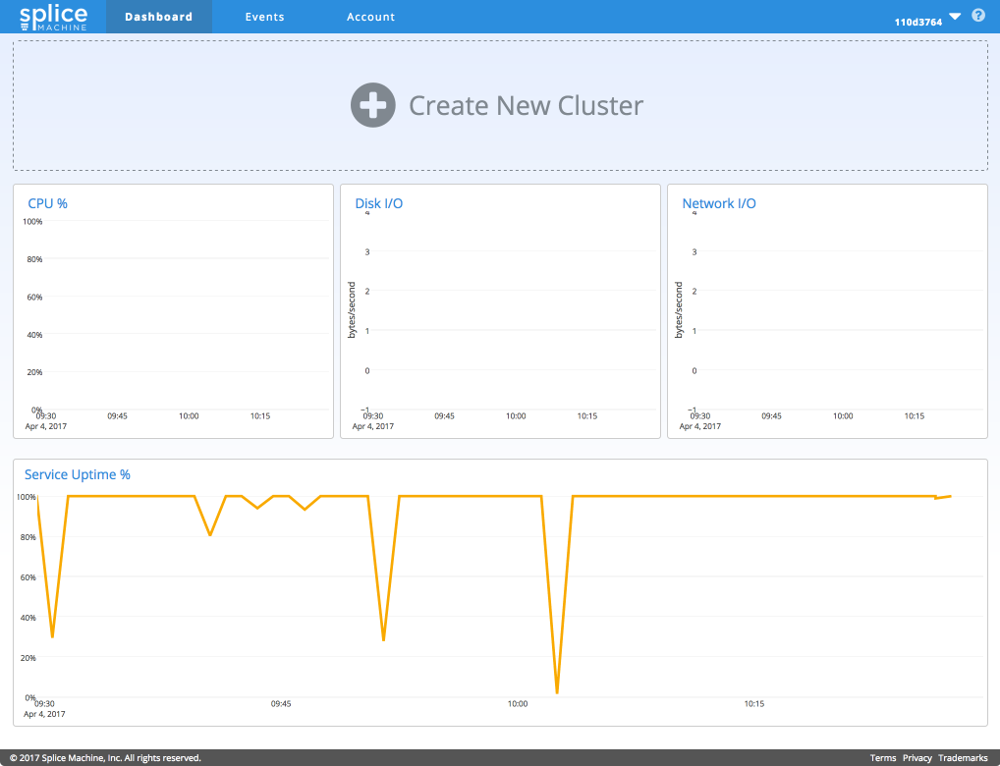
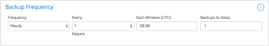
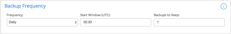
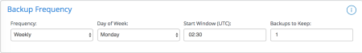
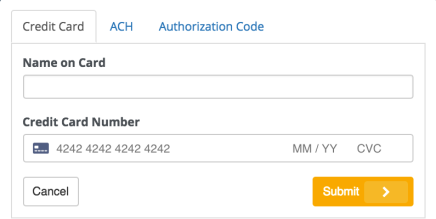
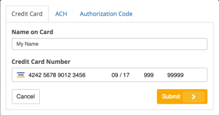
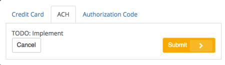
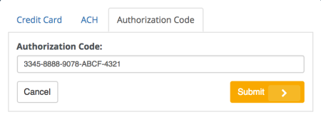
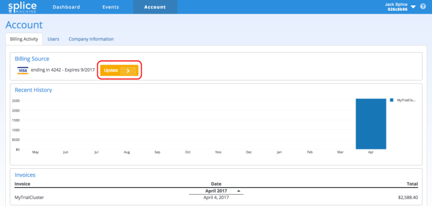

Creating a New Splice Machine Cluster
When you first visit your new Splice Machine Cloud Manager dashboard, you'll see the initial dashboard view, which prompts you to create a new cluster:

Click Create New Cluster to start the process of provisioning your Splice Machine cluster. You'll then need to:
- Configure Cluster Parameters for data sizing, cluster power, and backup frequency.
- Configure Cluster Access for your users.
- Set Up Payment for your Splice Machine cluster.
- Start Using Splice Machine!
This page describes how to use the Splice Machine Cloud Manager to create a cluster; it covers both the full (non-trial) and trial versions of the Splice Machine Database Service.
Configure Cluster Parameters
You use the Create New Cluster screen to provision your cluster:

Many of the components on this screen, like most of our Cloud Manager screens, include small information buttons  that you can click to display a small pop-up that describes the components.
that you can click to display a small pop-up that describes the components.
About the Cluster Parameters
You'll notice several sliders that you can adjust to modify the configuration of your cluster. As you move these sliders, you'll see how the estimated monthly costs for your cluster change. For a fast start, you can select the Apply Free Trial Parameters option. Splice Machine fixes the cluster parameters (other than name and regions) and automatically provisions a cluster that you can use to experiment with Splice Machine.
Here are explanations of the adjustments you can make to your cluster provisioning:
| Cluster Name | Supply whatever name you want for your Splice Machine cluster. | |
| Region | You can select in which AWS region your cluster will reside by clicking the previously selected region name, which drops down a list of choices. | |
| Apply Free Trial Parameters |
Select this option if you are provisioning a free trial version of Splice Machine. With this option, the Data Sizing, Cluster Power, and Backup Frequency settings are automatically configured, and cannot be modified. |
|
| Data Sizing | Internal Dataset (TB) |
Move the slider to modify your estimate of how large your database will be. Internal Dataset is the amount of data that you will be storing within your Splice Machine database. |
| External Dataset (TB) |
Move the slider to modify your estimate of how large your external dataset will be. External Dataset is the amount of data the you will be accessing from external data sources, using features such as external tables and our virtual table interface. |
|
| Cluster Power | OLTP Splice Units |
Move the slider to modify your estimate of how much processing power you need for transactional query processing. More OLTP units means more region servers in your cluster. |
| OLAP Splice Units |
Move the slider to modify your estimate of how much processing power you need for analytical query processing. More OLAP units means more Spark executors. |
|
| Backup Frequency | Frequency |
Select how frequently you want Splice Machine to back up your database. You can select Hourly, Daily, or Weekly; each selection displays additional backup timing and retention options: Hourly:  Daily:  Weekly:  |
Modifying Cluster Parameters
We recommend that you spend a few minutes experimenting with modifying the cluster parameters; you'll notice that as you increase various values, the estimated monthly cost of your cluster changes.
When you're satisfied with your cluster configuration parameters, click the Next button to set up access to your cluster.
You'll notice that when you increase some values, Splice Machine may indicate that the current setting for a parameter clashes with a change that you've made. For example, in the following image, we have increased the Internal Dataset size to 20 TB, and as a result the Cluster Power values are no longer adequate to support that large a dataset, as indicated by the striping:

Splice Machine will not allow you to create your cluster if any of your values clash. You can click the vertical bar at the end of the striping to instantly set the parameter to the required value.
Configure Cluster Access
Once you've configured your cluster, click the Next button to display the Cluster Access screen. The following image includes displays of the pop-up help information displays for the different access methods:

You can set your cluster up for access to your Amazon Virtual Private Cloud (VPC) access by selecting the Client VPC connectivity required option and providing your VPC account ID.
You need to configure AWS Identity and Access Management (IAM) for your cluster to allow Splice Machine to access selected S3 folders; this is described in our Configuring an S3 bucket for Splice Machine Acces tutorial.
For more information about Amazon VPC, see https://aws.amazon.com/vpc/.
For more information about Amazon IAM, see https://aws.amazon.com/iam/.
After setting up any access methods, please confirm that you accept our terms and conditions, then click the Launch button, which will take you to the Payment screen.
Set Up Payment
After clicking the Launch button, you'll land on the Payment screen:

You can use one of three payment methods:
| Credit Card |

|
| ACH Electronic Transfer |
 |
| Authorization Code |
 |
Modifying Payment Information
If you ever need to change your payment information, you can update it in the Billing Activity tab of the Account screen; just click the Update button to revisit the Payment screen:

Load Your Data!
After your cluster spins up, which typically requires about 10 minutes, you can load your data into your Splice Machine database from an S3 bucket:
- If you don't yet know how to create an S3 bucket or upload data to a bucket, please check our Uploading Data to an S3 Bucket tutorial.
- You may need to configure IAM permissions to allow Splice Machine to access your bucket; see our Configuring an S3 Bucket for Splice Machine Access tutorial.
- Once you've got your data in a bucket, you can follow our Importing Data tutorial to load that data into Splice Machine.